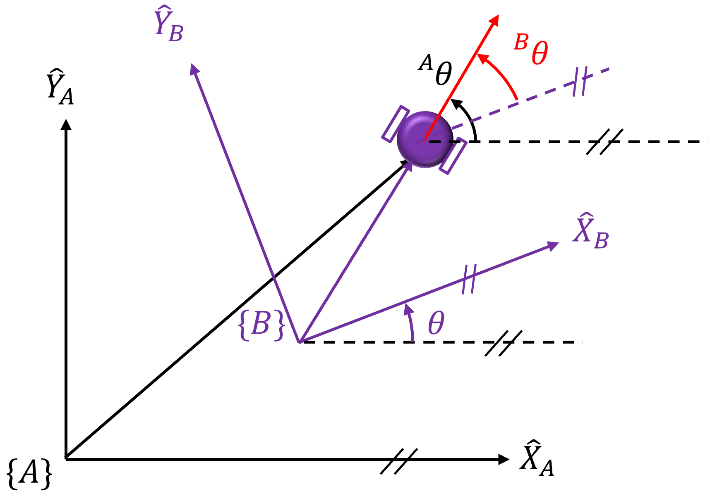

🔬 Lab7: Transformation#
📌 Objectives#
Students should be able to explain the concept of coordinate transformation between global and local frames.
Students should be able to implement a method to reset local coordinates without restarting the TurtleBot3.
Students should be able to apply the rotational transformation matrix to convert coordinates between different frames.
Students should be able to utilize IMU and odometry sensor data to determine the robot’s pose.
Students should be able to develop and test a ROS2 service to reset the TurtleBot3’s pose programmatically.
Students should be able to debug and troubleshoot coordinate transformation issues in a real-world robotic system.
📜 Overview#
In this lab, we will learn how to transform coordinates from the global coordinate system to the local coordinate system. When you power on the TurtleBot3, its initial position and orientation (pose) are automatically set to zero. However, if you want to start a new task after completing a previous one, the initial pose will no longer be zero.
To reset the pose, you could power-cycle the robot or press the reset button on the OpenCR board, but this also requires restarting bringup, which is not always convenient. Instead, we will implement a method to reset the local coordinates without having to restart the board.

As discussed in the lecture, a coordinate transformation allows us to express a point’s position in one frame relative to another. The rotational matrix that rotates Frame {B} with respect to Frame {A} by an angle \(\theta\) in a 2D space is given by:
Using this transformation, a position \(\mathbf{p}\) in the figure above can be represented in both Frame {A} (the global frame) and Frame {B} (the local frame). The coordinate transformation equation is:
where:
\([{}^{A}x \quad {}^{A}y]^\top\) represents the position in the global frame, measured by the TurtleBot’s IMU and odometry sensors.
\([{}^{B}x \quad {}^{B}y]^\top\) represents the position in the local frame, which we aim to determine.
\(\theta\) is the orientation of Frame {B} relative to Frame {A}.
\([x \quad y]^\top\) represents the displacement between Frame {A} and Frame {B}.
To find the local coordinates \([{}^{B}x \quad {}^{B}y]^\top\), we rearrange the equation:
The orientation with respect to Frame {B}, \({}^{B}\theta\), can be obtained by \({}^{B}\theta = {}^{A}\theta - \theta\) as illustrated in the figure below
{kind=link}
This transformation allows us to reset the local coordinates programmatically rather than manually restarting the TurtleBot3, making our system more efficient and flexible.
🌱 Pre-Lab: Testing the IMU#
Non-Interactive SSH Sessions#
Sometimes, we need to execute commands remotely without logging into the remote host via SSH. Here’s how you can run commands remotely from your local computer:
Run the following command on your master computer:
$ ssh pi@robotX 'ls -la'
Here, X is the number assigned to your robot. This command will display the files and directories in the
piuser’s home directory, allowing us to execute commands on the remote computer without actually logging into it.Try running this command next:
$ ssh pi@robotX 'echo $ROS_DOMAIN_ID'
You may notice that it returns an empty string, even though we have already defined
ROS_DOMAIN_IDinside the.bashrcfile. To verify it’s defined correctly, run:$ ssh pi@robotX 'cat ~/.bashrc'
Look for the line:
export ROS_DOMAIN_ID=99
It confirms that
ROS_DOMAIN_IDis defined correctly in the.bashrcfile.At the beginning of the
.bashrcfile, you will find the following lines:# If not running interactively, don't do anything case $- in *i*) ;; *) return;; esac
This code prevents the
.bashrcfile from executing if the shell is not in interactive mode. Since oursshcommand runs in non-interactive mode, this code skips the rest of the.bashrcfile. When you log into the host computer via SSH, the shell is in interactive mode, and all commands are executed normally.Open Visual Studio Code (
VS Code) and click on theExtensionsicon on the left sidebar or pressCtrl+Shift+X. Typeremoteand selectRemote-SSH. Install it if it’s not already installed.Open the Command Palette by pressing
Ctrl+Shift+Por navigating toView > Command Palette. Type the first few letters ofRemote-SSHand selectRemote-SSH: Connect to Host. Enterpi@robotXand hit Enter. Type the password if prompted, though it should be password-free if you’ve set up an SSH key. It may take a couple of minutes to set up thevscode serveron the remote computer for the first time.Click
Exploreron the left sidebar, choose/home/pifor theOpen Folderoption, and hit OK. You should now see all the files in the home directory. Click on.bashrcto open it. Replace the following lines:# If not running interactively, don't do anything case $- in *i*) ;; *) return;; esac
with:
# If not running interactively, set the following environment variables if [[ $- != *i* ]]; then source /opt/ros/humble/setup.bash source ~/robot_ws/install/setup.bash export TURTLEBOT3_MODEL=burger export ROS_DOMAIN_ID=98 # TURTLEBOT3 export LDS_MODEL=LDS-02 # Replace with LDS-01 if using old LIDAR return fi
Ensure that
ROS_DOMAIN_ID=98is set with your domain ID. Save the file.On a terminal, try:
$ ssh pi@robotX 'echo $ROS_DOMAIN_ID'
It should now return your domain ID.
Running robot.launch.py without SSH into the Robot#
Previously, to drive a physical TurtleBot3, we had to log into the remote host using SSH and run ros2 launch turtlebot3_bringup robot.launch.py. Here, we will implement a more convenient method to accomplish the same task without logging into the remote computer:
On a terminal, run:
$ ssh pi@robotX 'ros2 launch turtlebot3_bringup robot.launch.py'
This command remotely starts the
robot.launch.pyscript on the TurtleBot3.To simplify this process, add the following alias to the
.bashrcfile on yourmastercomputer:alias bringup='ssh pi@robotX '\''ros2 launch turtlebot3_bringup robot.launch.py'\'
Apply the changes by sourcing the
.bashrcfile or restarting the terminal. Now, simply run:$ bringupThis alias will allow you to run the
robot.launch.pyscript on your TurtleBot3 without needing to log into the remote computer each time.To verify that the launch file is running correctly, check the active ROS nodes on the
mastercomputer:$ ros2 node list
If the expected nodes are running, your setup is correct.
Following these steps will ensure a seamless and efficient workflow for launching ROS2 on your TurtleBot3 without needing manual SSH logins each time.
💻 Lab Procedure#
Creating a New ROS2 Package#
Follow these steps to set up a new ROS2 package for this lab:
Navigate to Your Workspace: Open a terminal and move into the
ece387_wsdirectory within your ROS2 workspace:cd ~/master_ws/src/ece387_ws
Create a New ROS2 Package: Use the following command to create a new package named
lab7_tfwith the BSD-3 license:ros2 pkg create --build-type ament_python --license BSD-3-Clause lab7_tf
Copy the
move2goal.pyScript: Copy themove2goal.pyfile from Lab 6 into theece387_ws/lab7_tf/lab7_tf/directory and rename it tomove2goal_tf.pyAdd Dependencies: Edit
package.xmlto include the following dependencies:<depend>rclpy</depend> <depend>geometry_msgs</depend> <depend>nav2_msgs</depend> <depend>sensor_msgs</depend> <depend>std_srvs</depend>
Modify
setup.py: Update theentry_pointssection to include themove2goal_tfscript:entry_points={ 'console_scripts': [ 'move2goal_tf = lab7_tf.move2goal_tf:main', ], },
Implementing the Service Server#
Import Required Libraries: Open
move2goal_tf.pyand add the following imports:from std_srvs.srv import Empty from nav2_msgs.srv import SetInitialPose import math
Create a Service Server: Add the following service server inside the
__init__method:# TODO: Create a service server that will handle '/set_pose' service requests # - Service type: 'SetInitialPose' # - Service name: '/set_pose' # - Callback function: 'self.set_pose_callback' to execute when the service is called self.reset_service = 0 # Update this line.
Update Position Variables: Replace the following lines in the
__init__method# Variables to store the robot's current position and orientation self.x = 0.0 # Current x-coordinate self.y = 0.0 # Current y-coordinate self.yaw = 0.0 # Current orientation (yaw angle in radians)
with
# Local Position Variables (Start at 0.0, 0.0, 0.0) self.local_x = 0.0 self.local_y = 0.0 self.local_yaw = 0.0 # Variables for previous position to compute displacement self.initial_global_x = None self.initial_global_y = None self.initial_global_yaw = None
Define the Callback Function: Implement the service callback function to reset the local pose:
def set_pose_callback(self, request: SetInitialPose.Request, response: Empty.Response) -> Empty.Response: """ Resets the local position coordinates to zero and clears the previous position coordinates. """ # Reset the local position coordinates self.local_x = request.pose.pose.pose.position.x self.local_y = request.pose.pose.pose.position.y # Convert Quaternion to Euler Angles (Extract Yaw) q = request.pose.pose.pose.orientation quaternion = [q.x, q.y, q.z, q.w] _, _, self.local_yaw = euler_from_quaternion(quaternion) # Reset the state self.state = "ROTATE_TO_GOAL" # Clear the previous position coordinates # This ensures that any previous position data is discarded self.initial_global_x = None self.initial_global_y = None self.initial_global_yaw = None # Log a message to indicate the local position has been reset self.get_logger().info(f"Local pose set to x={self.local_x}, y={self.local_y}, yaw={self.local_yaw}.") # Return the response to the service caller return response
Test the Service: First, run the node:
ros2 run lab7_tf move2goal_tf
Then, in another terminal, call the service:
ros2 service call /set_pose nav2_msgs/srv/SetInitialPose "{pose: {pose: {pose: {position: {x: 0.0, y: 0.0, z: 0.0}, orientation: {x: 0.0, y: 0.0, z: 0.0, w: 1.0}}}}}"
You should see a confirmation message indicating that the local pose has been reset.
Implementing the Service Client#
Modify
gamepad.py: Import the required libraries:from std_srvs.srv import Empty from geometry_msgs.msg import PoseWithCovarianceStamped import math
Create a Service Client: Inside the
__init__method, add:# TODO: Create a service client to call the '/set_pose' service # - Service type: 'SetInitialPose' # - Service name: '/set_pose' self.reset_pose_client = 0 # Update this line
Call the Service on Button Press: Modify
joy_callbackto call the reset function when the Y button is pressed:# Check if button 2 (Y) is pressed to reset the pose if msg.buttons[2]: self.send_set_pose_request(0.0, 0.0, 0.0) # Call the reset_pose service
Define the Request Function: Implement
send_set_pose_request:def send_set_pose_request(self, x:float, y:float, theta:float): """ Calls the 'reset_pose' service to reset the robot's pose. """ # Check if the service is available if not self.reset_pose_client.wait_for_service(timeout_sec=1.0): self.get_logger().warn("Service 'reset_pose' not available.") return # Create a request object request = SetInitialPose.Request() request.pose = PoseWithCovarianceStamped() # Set Header request.pose.header.frame_id = "map" request.pose.header.stamp = self.get_clock().now().to_msg() # TODO: Set Position # TODO: Convert Yaw (theta) to Quaternion # z = sin(theta/2), w = cos(theta/2) # TODO: Set Covariance (required by AMCL, small uncertainty such as [0.1]*36) # Call the service asynchronously future = self.reset_pose_client.call_async(request) # Add a callback to handle the service response future.add_done_callback(self.reset_pose_done_callback)
Handle Service Response: Add the following method to the
Gamepadclass:def reset_pose_done_callback(self, future): """ Callback function to handle the response from the 'reset_pose' service. """ try: # Check if the service call was successful response = future.result() if response: self.get_logger().info("Pose reset successfully.") else: self.get_logger().error("Pose reset failed.") except Exception as e: self.get_logger().error(f"Service call failed: {e}")
Implement Coordinate Transformation#
Modify the
imu_callbackMethod First, update theimu_callbackmethod in theMoveToGoalclass as follows:def imu_callback(self, imu_msg: Imu) -> None: """ Callback function for handling control relinquishment messages. Updates local yaw relative to the starting orientation. """ q = imu_msg.orientation _, _, global_yaw = euler_from_quaternion([q.x, q.y, q.z, q.w]) if self.initial_global_yaw is None: # Store the initial yaw as a reference self.initial_global_yaw = global_yaw return # Skip first iteration # TODO: Compute local yaw relative to the initial global yaw self.local_yaw = 0
Modify the
odom_callbackMethod Update theodom_callbackmethod to handle odometry messages and update the local x and y coordinates relative to the starting position:def odom_callback(self, msg: Odometry) -> None: """ Callback function for handling odometry messages. Updates the local x and y coordinates relative to the starting position. """ # Extract global x and y coordinates from the odometry message global_x = msg.pose.pose.position.x global_y = msg.pose.pose.position.y # Check if this is the first iteration (initial global position not set) if self.initial_global_x is None: # Store the initial global position as the reference point self.initial_global_x = global_x self.initial_global_y = global_y # Skip processing for the first iteration return # TODO: Compute the displacement of the global position from the initial global position dx = 0 dy = 0 # TODO: Rotate displacement to align with the initial local frame # This step is necessary to ensure the local coordinates are relative to the starting orientation self.local_x = 0 self.local_y = 0
Update the
control_loopMethod Finally, ensure that thecontrol_loopmethod is updated to reflect the changes in the coordinate transformation.
Build and Test the Package#
Let’s ensure your package is built and tested properly:
Build the
lab7_tfPackage Use the following command to build your package:$ ccbuild --packages-select lab7_tf
Demo the Robot
Run the
move2goal_tfnode to demonstrate the robot moving to the goal location(-0.61, 0.61)in meters and rotate the robot to face0°.Press Button Y to reset the pose and redo the previous task.
🚚 Deliverables#
[20 Points] Complete the
move2goal_tf.pyScriptEnsure the script is fully functional and implements all required features.
Push your code to GitHub and confirm that it has been successfully uploaded. NOTE: If the instructor can’t find your code in your repository, you will receive a grade of 0 for the coding part.
[15 Points] Complete the
gamepad.pyScriptEnsure the script is fully functional and implements all required features.
Push your code to GitHub and confirm that it has been successfully uploaded. NOTE: If the instructor can’t find your code in your repository, you will receive a grade of 0 for the coding part.
[15 Points] Demonstration
Show the robot successfully navigating to the goal location and orientation in a real-world setup.